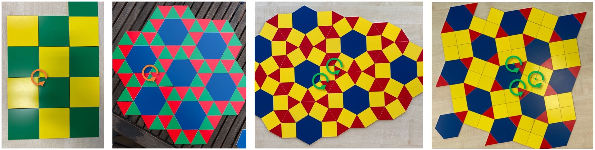
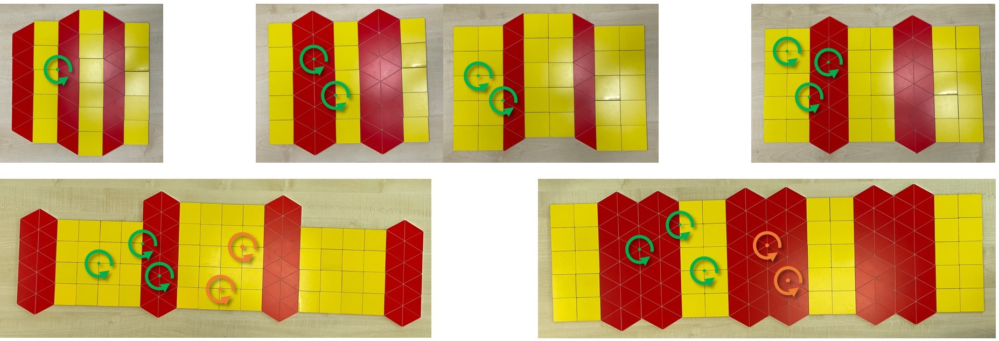
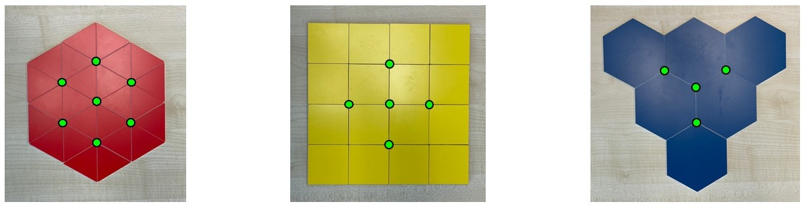

(3) Definitionen
Meine Muster sollen aus Polygonen (Definition 1) bestehen. Wenn man (gleiche oder verschiedene) Polygone um eine Ecke herum legt, ohne dass eine Lücke bleibt, dann nennen wir diese Polygone zusammen eine Gruppe (Definition 2) . Ein Muster (Definition 4) entsteht, wenn sich eine Gruppe immer weiter fortsetzen lässt, das heißt, wenn sich (die gleiche oder mehrere verschiedene) Gruppen aneinanderlegen (Definition 3) lassen, so dass am Ende der gesamte Tisch ohne Lücken abgedeckt wird. Die Muster werden dabei immer komplizierter je mehr verschiedene Gruppen dafür verwendet werden.
Definition 1: Polygone
Polygone sind regelmäßige geometrische Formen mit geraden Kanten, die überall den gleichen Winkel und die gleiche Kantenlänge haben. Die Ecken dieser Polygone liegen auf einem Kreis. Es gibt 3-Ecke, 4-Ecke, 5-Ecke, 6-Ecke und noch mehr Ecke, aber ein 2-Eck und ein 1-Eck gibt es nicht. Der Innenwinkel, also der Winkel zwischen zwei Polygonkanten wird immer größer, je mehr Ecken ein Polygon hat. Beim Dreieck ist der Innenwinkel 60 Grad, beim Viereck 90 Grad, beim Fünfeck 108 Grad und beim Sechseck ist er 120 Grad. Egal wie viele Ecken ein Polygon hat, der Innenwinkel kann niemals 180 Grad erreichen.
Definition 2: Gruppen
Für eine Gruppe legen wir mehrere Polygone um eine Ecke herum, so dass keine Lücke übrig bleibt. Dazu müssen sich die Innenwinkel der Polygone zu exakt 360 Grad aufsummieren. Weil alle Kanten gleich lang sind, liegen die Polygone dann automatisch Kante-an-Kante. Wenn wir eine Gruppe gefunden haben, kann man die Reihenfolge der Polygone vertauschen und findet entweder eine neue oder wieder die gleiche Gruppe.
Ich merke mir eine Gruppe mit einem Code , für den ich die Reihenfolge der Polygone durch Zahlen aufschreibe. Zum Beispiel bedeutet 3-4-6-4 , dass ich ein Dreieck, ein Viereck, ein Sechseck und dann noch ein Viereck zu einer Gruppe zusammenlege. Die Innenwinkel sind bei dieser Gruppe
60 Grad + 90 Grad + 120 Grad + 90 Grad = 360 Grad.
Je nachdem mit welchem Polygon ich dabei anfange, gibt es verschiedene Codes für die gleiche Gruppe (z.B. 3-4-6-4, 4-6-4-3, 6-4-3-4, 4-3-4-6 ). Außerdem kann man die Polygone einer Gruppe im Uhrzeigersinn oder gegen den Uhrzeigersinn aufzählen. Das ergibt dann nochmals verschiedene Codes für die gleiche Gruppe (z.B. 3-4-4-6, 6-4-4-3 ). Aber es können beim Vertauschen der Polygone auch neue Gruppen entstehen (z.B. 3-4-4-6 und 3-4-6-4 sind verschiedene Gruppen.
Eine einfache Gruppe besteht nur aus gleichen Polygonen (zum Beispiel 3-3-3-3-3-3 oder 4-4-4-4 ). Eine gemischte Gruppe kombiniert verschiedene Polygone (z.B. 3-4-6-4 ).
Definition 3: Zusammenlegen
Jede Gruppe hat eine Ecke in der Mitte. Beim Zusammen- legen von zwei Gruppen müssen wir aufpassen, dass dadurch nicht unbeabsichtigt eine neue zusätzliche Ecke oder Gruppe entsteht, sondern nur für jede der beiden Gruppen eine Ecke.
Dieses Bild zeigt wie man die Gruppen 4-3-4-3-3 und 3-4-6-4 richtig zusammenlegt (links). Wenn wir sie nebeneinander- legen (Mitte), entsteht dazwischen eine neue Ecke mit der neuen Gruppe 4-4-3-3-3 . Wir müssen sie also besser so hinlegen, dass sich die beiden Gruppen ein gemeinsames Dreieck und ein Viereck teilen. Dann bleibt es bei den beiden ursprünglichen Ecken (rechts). Daran erkennt man, dass man nicht jedes Paar von Gruppen kombinieren kann, sondern nur solche Gruppen, bei denen zwei aufeinanderfolgende Polygone gleich sind (Überlapp). In diesem Beispiel ist das ein Dreieck und ein Viereck.
Definition 4: Muster
Um ein Muster zu erzeugen, legen wir Gruppen (Definition 2) von Polygonen (Definition 1) überlappend (Definition 3) immer so hin, dass die Polygone Kante-an-Kante liegen und keine Lücken übrig bleiben. Ein Muster entsteht, wenn immer wieder die gleichen Gruppen von Polygonen aneinander passen und sich das Muster dadurch regelmäßig immer weiter fortsetzen lässt. Einfache Muster bestehen nur aus einer Art von Polygonen (also nur aus einer einfachen Gruppe), gemischte Muster bestehen aus einer gemischten Gruppe. Doppelt gemischte Muster kombinieren zwei verschiedenen Gruppen, bei dreifach gemischten Mustern sind es drei verschiedene Gruppen und so weiter.
Hier sind Beispiele für einfache, gemischte, doppelt gemischte und dreifach gemischte Muster. Die Gruppen sind durch Kreise markiert:

Im Internet habe ich noch andere Definitionen für Muster und die Einteilung von einfach bis kompliziert gefunden. Für diese Definitionen probiert man aus, wie man ein Muster verschieben oder drehen kann, so dass jede Kante genau wieder auf einer Kante liegt. Das kann man z.B. machen, in dem man das gleiche Muster einmal auf ein Papier und einmal auf eine durchsichtige Folie zeichnet und diese dann übereinanderlegt. Zwei Ecken, die so übereinandergelegt werden können, zählen dann als gleich und die Kompliziertheit eines Musters hängt davon ab, wie viele verschiedene (also nicht gleiche) Ecken ein Muster hat.
Das ist eigentlich so ähnlich wie meine eigene Definition mit den einfach, doppelt und dreifach gemischten Mustern. Aber nicht genau dasselbe, denn nicht alle Ecken mit der glei-chen Gruppe (gleiche Ecken nach meiner Definition) können in einem komplizierten Muster auch übereinandergelegt werden (gleiche Ecken nach der Übereinanderlege-Definition).
Ich habe z.B. Muster aus Dreiecken und Vierecken gelegt:

Das erste Muster ist nach meiner Definition einfach gemischt (nur eine Art von Gruppen). Die zweiten beiden Muster sind doppelt gemischt und das dritte ist dreifach gemischt. Die nächsten beiden Muster in der zweiten Zeile sind nach meiner Definition immer noch dreifach gemischt (grüne Kreise), aber nach der Übereinanderlegen-Definition sind manche Ecken mit gleicher Gruppe trotzdem nicht gleich (orange Kreise), wenn sie an verschiedenen Stellen innerhalb der gelben oder roten Streifen liegen.
Diese Muster mit immer breiteren gelben oder roten Streifen finde ich aber eigentlich nicht so spannend und sie werden auch nicht wirklich komplizierter, weil innerhalb der Streifen nur immer noch größere Bereiche mit einfachen Mustern dazu kommen. Deswegen möchte ich keine solche Muster mit unnötig großen regulären Bereichen haben und sage, dass kein Muster einen der folgenden Teilbereiche enthalten darf:

Denn solche Teilbereiche, in denen eine einfache Gruppe nur von Gruppen mit der gleichen Gruppen-Art umgeben ist, sind ein Anzeichen für langweilige Bereiche. Damit sind auch die Muster oben in der zweiten Reihe mit den immer breiteren Streifen auch ausgeschlossen.